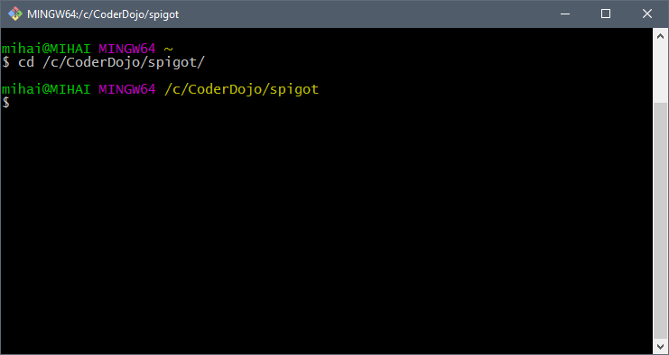

Cuprins
1 Pregătirea mediului de lucru pentru atelierele CoderDojo: Java - Minecraft Modding cu Spigot
1.1 Instalare GIT Bash pentru Windows
Git Bash ne ajută să instalăm ultima versiune a serverului Spigot.
Kitul de instalare se descarcă de aici: https://git-for-windows.github.io/
1.2 Instalarea serverului Spigot
Se descarcă Spigot Build Tools - un fisier "BuildTools.jar".
- Instrucțiuni: https://www.spigotmc.org/wiki/buildtools/
- link către ultima versiune: https://hub.spigotmc.org/jenkins/job/BuildTools/lastSuccessfulBuild/artifact/target/BuildTools.jar
Instalare:
- Facem un folder "C:\CoderDojo\spigot\".
- În interiorul lui mutăm fisierul descărcat "BuildTools.jar"
- Deschidem Git Bash (instalat anterior). Îl găsim pe Desktop dacă s-a bifat această poțiune în timpul instalării sau apăsand tasta windows + Q:
- După deschidere, ne mutăm în folderul C:\CoderDojo\spigot\ unde am copiat BuildTools.jar
- Navigarea în consolă se face cu instrucțiunea "cd" - de la change directory:
-
cd /c/CoderDojo/spigot
- Observăm că folosim slash în loc de back-slash si /c/ în loc de C:. Asta pentru că Git Bash este un emulator de linux.
- 
- Pornim instalarea serverului Spigot cu comanda:
-
java -jar BuildTools.jar
- Buld Tools va descărca ultimele surse si le va compila, deasemeni va decompila minecraft-ul. La final vom avea în sistem disponibile mai multe biblioteci ajutătoare: spigot, bukkit (vor fi instalate în repository-ul local de maven).
- Actualizarea serverului Spigot:
- în cazul în care vom primim ulterior un mesaj de genul:
- *** Error, this build is outdated ***
- *** Please download a new build as per instructions from https://www.spigotmc.org/ ***
- *** Server will start in 15 seconds ***
- Atunci va trebui să mai rulăm încă o dată comanda "java -jar BuildTools.jar" (atenție: tot din consola Git Bash)
1.3 Pornirea serverului Spigot
- serverul se porneste dintr-o consolă de Windows: cmd
- se navighează în folderul în care am instalat serverul Spigot
- se pornește serverul cu comanda: java -jar
- cd C:/CoderDojo/spigot
- java -jar spigot-X.X.X.jar
- unde
X.X.X- este ultima versiune de spigot. Se va identifica în folderul C:\CoderDojo\spigot\ - La prima pornire a serverului trebuie acceptată licența. Apare mesajul:
- [07:48:00 INFO]: You need to agree to the EULA in order to run the server. Go to eula.txt for more info.
- [07:48:00 INFO]: Stopping server
- Se editează fisierul
eula.txtdinc:/CoderDojo/spigotsi se înlocuieste"false"cu"true"îneula=false - Pentru ca serverul să accepte conexiuni de la clienții care nu au cont Minecraft premium, trebuie editat
fisierul
server.propertiesși schimbată proprietateaonline-mode=trueînonline-mode=false. - după re-pornirea serverului cu comanda:
java -jar spigot-X.X.X.jar, trebuie să vedeți mesajul:-
- [07:56:04 INFO]: Done (8.678s)! For help, type "help" or "?"
-
- În acest moment ne putem conecta cu Minecraft-ul la serverul Spigot de pe calculatorul local:

{kind=link}
{kind=link}
{kind=link}